15/01/2024 — Điện tâm đồ nhiều nhiễu, biên độ thấp ở bệnh nhân đau ngực
Bản dịch tiếng Việt của bài "Noisy, low amplitude ECG in a patient with chest pain" – Dr. Smith’s ECG Blog. Giữ nguyên toàn bộ 17 hình ảnh của bản gốc.
Bài viết của Colin Jenkins. Colin là bác sĩ nội trú cấp cứu, sẽ bắt đầu chương trình đào tạo chuyên sâu (fellowship) hồi sức tích cực vào mùa hè này, đặc biệt quan tâm đến vai trò của điện tâm đồ trong hồi sức tích cực và OMI.
Biên tập bởi Willy Frick.
Một bệnh nhân ở độ tuổi 40, có đái tháo đường típ 1 và rối loạn lipid máu, đến khoa cấp cứu vì bệnh cảnh “giống cúm” đã 5 ngày. Bệnh nhân khó mô tả triệu chứng của mình, nhưng than mệt lả nặng, buồn nôn, nôn, đau đầu và đau ngực. Bệnh nhân phủ nhận sốt, ho, khó thở và tiếp xúc với người bệnh. Bệnh nhân mô tả cơn đau ngực dữ dội, kiểu bóp nghẹt và không lan. Cơn đau không tăng khi gắng sức và không giảm khi nghỉ. Bệnh nhân run và hạ đường huyết nặng theo xét nghiệm tại chỗ. Một điện tâm đồ được ghi ngay sau khi bệnh nhân đến:
Điện tâm đồ 1

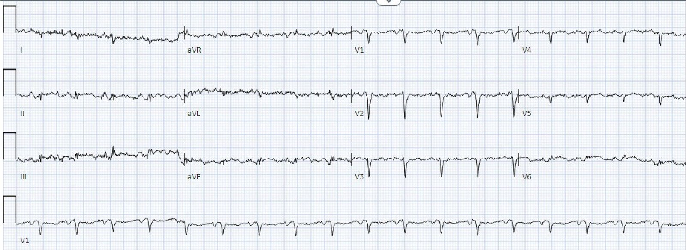
Bạn nghĩ gì?
Điện tâm đồ có rất nhiều nhiễu và biên độ rất nhỏ, khiến việc đọc trở nên khó khăn. Chúng ta có thể thấy đủ để nhận ra nhịp là nhịp nhanh xoang. Nhịp nhanh là điều bất thường ở OMI, trừ khi bệnh nhân đang sốc tim (hoặc sắp sốc tim). Việc thiếu sóng R ở các chuyển đạo trước gợi ý nhồi máu thành trước không xác định được tuổi, nhưng dường như không có OMI thành trước đang diễn ra.
Đôi khi, khi biên độ nhỏ như thế này và tỷ số tín hiệu trên nhiễu kém như thế này, có thể khó chắc chắn đâu là QRS, đâu là đoạn ST, đâu là sóng T, v.v. Thường sẽ hữu ích nếu tìm một chuyển đạo mà sự phân biệt là rõ ràng, ví dụ dải nhịp V1. Sau đó bạn có thể so sánh chúng để làm rõ. Điều này được minh họa bên dưới với chuyển đạo V6. Các đường thẳng đứng đánh dấu điểm bắt đầu và kết thúc của QRS (xác định rõ ràng trên dải nhịp và kéo dài lên trên), và đường nằm ngang đánh dấu đường nền đẳng điện.

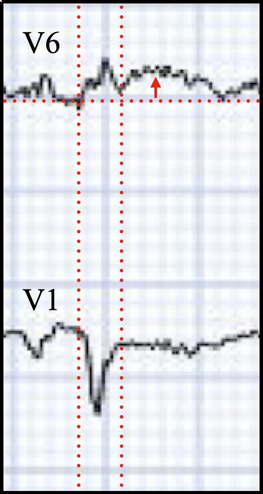
Nếu chỉ nhìn riêng, V6 có thể bị bỏ qua. Khi bạn so sánh nó với V1, bạn có thể nhận ra ngay diện tích dưới đường cong rất lớn của sóng T ở V6, gợi ý mạnh sóng T tối cấp. Khi xem xét các vùng lân cận, aVF bỗng trở nên đáng ngờ hơn nhiều, và ở mức độ ít hơn là chuyển đạo II. Tổng hợp lại, điều này gợi ý mạnh OMI thành dưới-bên, đặc biệt ở một bệnh nhân đau ngực cấp.

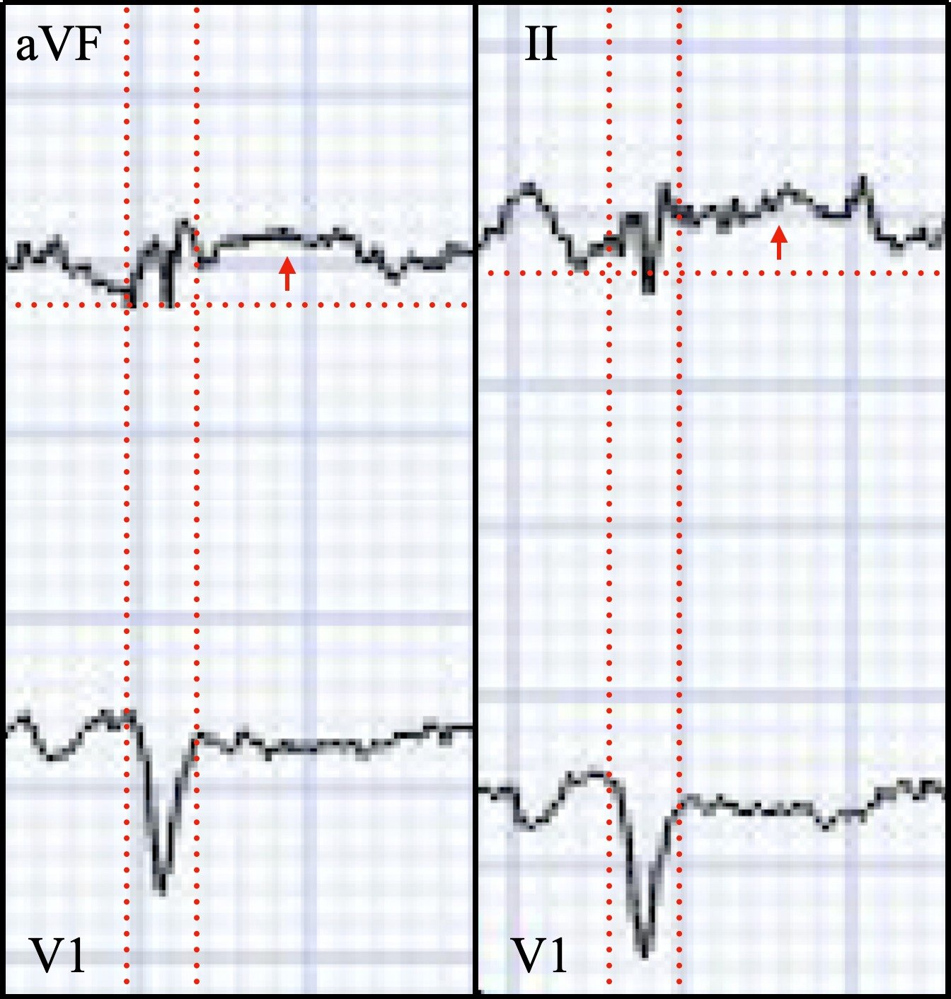
Hãy nhớ rằng máy điện tâm đồ thường có thể điều chỉnh độ khuếch đại (gain). Độ khuếch đại chuẩn là 10 mm/mV, nhưng nếu bạn có một bản ghi điện thế thấp như thế này, bạn có thể ghi lại với độ khuếch đại tăng lên 20 mm/mV. Dưới đây là điện tâm đồ 1 với độ khuếch đại tăng lên 20 mm/mV.

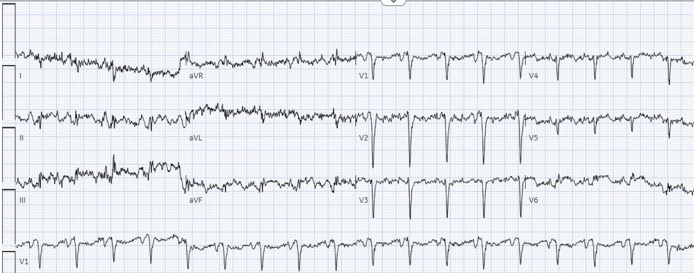
Giờ đây đã dễ nhận ra hơn một chút ST chênh lên ở thành dưới-bên, dù vẫn còn rất nhiều nhiễu. Tôi đã gửi điện tâm đồ với độ khuếch đại gốc cho Dr. Meyers mà không kèm bối cảnh lâm sàng, và ông ấy nói “OMI.”
Đây là phần giải thích (explainability) của Queen of Hearts:

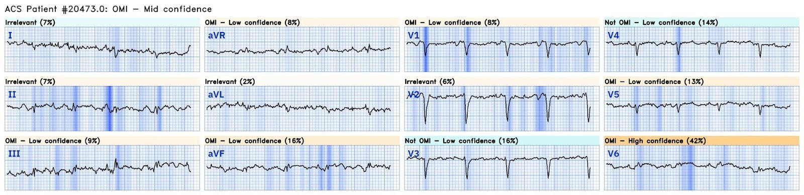
Như bạn có thể thấy, Queen nhìn chung có độ tin cậy trung bình (Mid Confidence) về OMI, nhưng độ tin cậy cao đối với chuyển đạo V6
BẠN CŨNG CÓ THỂ SỞ HỮU BOT AI PM Cardio!! (ỨNG DỤNG AI OMI PM CARDIO)
Nếu bạn muốn bot này giúp bạn chẩn đoán sớm OMI và cứu bệnh nhân cùng cơ tim của họ, bạn có thể đăng ký để nhận phiên bản beta sớm của bot tại đây.
https://share-eu1.hsforms.com/18cAH0ZK0RoiVG3RjC5dYdwfyfsg (biểu mẫu đăng ký)
Tôi cũng đã nhắn điện tâm đồ này cho Dr. Smith. Câu trả lời của ông là: “OMI. V6.”
Do có nhiễu, một điện tâm đồ thứ hai đã được ghi.
Điện tâm đồ 2

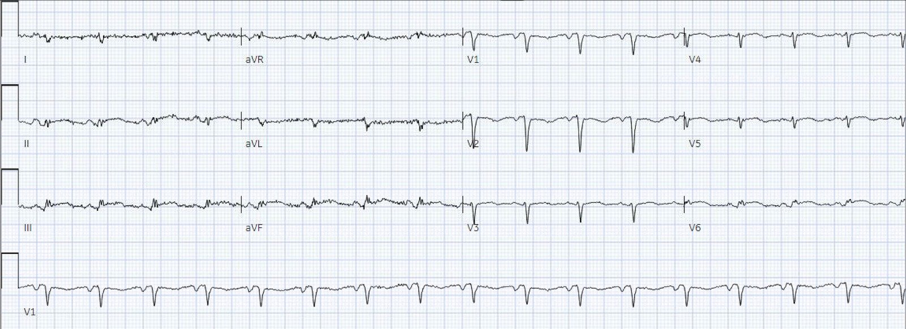
Đặc biệt khi đặt trong bối cảnh điện tâm đồ đầu tiên, độc giả của blog này sẽ dễ dàng nhận ra ST chênh lên và sóng T tối cấp ở II, III, aVF, V6, và ở mức độ ít hơn là V5. Và so với điện tâm đồ 1, giờ đây chúng ta nhận ra ST chênh xuống dốc xuống ở V1 và V2, phù hợp với lan rộng ra thành sau. (Hãy nhớ rằng thành sau nằm giữa thành dưới và thành bên, nên điều này không có gì đáng ngạc nhiên.)
Đây là kết quả đọc của Queen, kèm phần giải thích (Explainability):

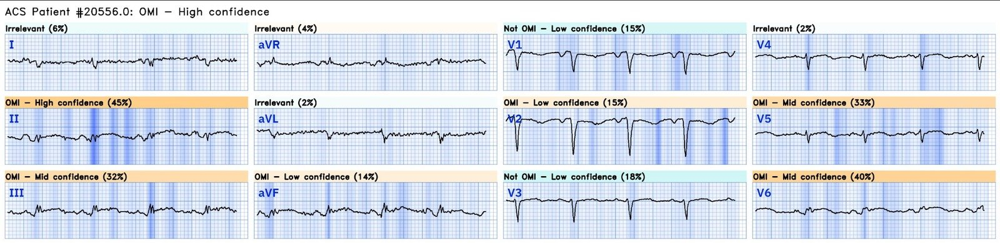
Queen có độ tin cậy cao
Các bác sĩ điều trị cho bệnh nhân đã nhận ra ST chênh lên (STE) ở thành dưới, nhưng ghi nhận rằng mức chênh dưới 1 mm.
Bình luận của Smith: điện tâm đồ này có giá trị chẩn đoán OMI cho đến khi chứng minh được điều ngược lại. Nên làm siêu âm tại giường để đánh giá thể tích dịch và các nguyên nhân khác của nhịp nhanh, nhưng nếu không tìm thấy nguyên nhân gây nhồi máu cơ tim típ 2, cần kích hoạt phòng thông tim NGAY BÂY GIỜ. Đừng chờ troponin; rất nhiều cơ tim sẽ bị hoại tử nếu bạn chờ. Bệnh cảnh “giống cúm” gợi ý viêm cơ tim hoặc viêm màng ngoài tim, nhưng đó sẽ là một chẩn đoán loại trừ.
Ca bệnh tiếp diễn…
Một thời gian sau, troponin I độ nhạy cao lấy vào thời điểm ghi điện tâm đồ 1 có kết quả 25.400 ng/L (tham chiếu 3-54). Điều này khẳng định nghi ngờ của các bác sĩ về một OMI kín đáo, dẫn đến việc kích hoạt phòng thông tim. Một điện tâm đồ thứ ba đã được ghi, được trình bày bên dưới:
Điện tâm đồ 3

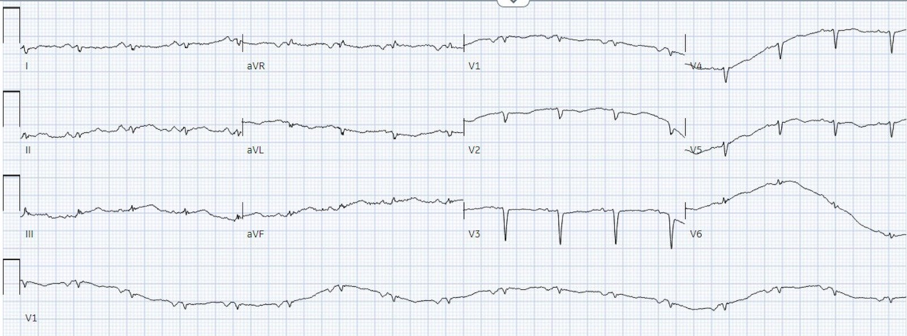
Và với độ khuếch đại tăng lên

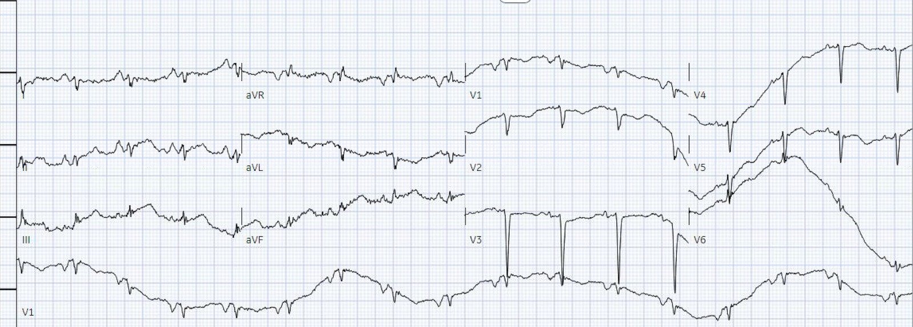
Tôi đã gửi điện tâm đồ này cho Dr. Smith, xem câu trả lời của ông bên dưới
Đây là phần giải thích (explainability) của Queen of Hearts:

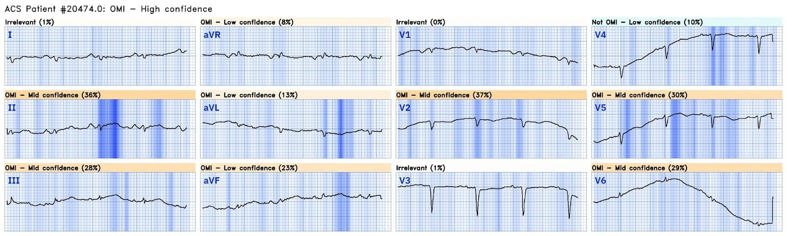
Tôi đã gửi điện tâm đồ với độ khuếch đại gốc cho Dr. Smith mà không kèm bất kỳ bối cảnh lâm sàng nào, và ông trả lời “OMI thành dưới-sau rất kín đáo”. Điện tâm đồ này thể hiện rõ hơn:
- Diện tích dưới đường cong của sóng T lớn ở II, III và aVF [người dịch: nguyên văn ghi “II, II, and aVF”, nhiều khả năng là lỗi đánh máy] cũng như V5 và V6 so với phức bộ QRS
- Đoạn ST thẳng, gập góc ở chính các chuyển đạo này
- Đoạn ST chênh xuống ở V2-V3 (như sẽ thấy trong OMI thành sau)
Khoa tim mạch đã đưa bệnh nhân đi chụp mạch vành ngay lập tức. Trong lúc chờ chuyển lên phòng thông tim, siêu âm tim khẩn (STAT) được thực hiện và cho thấy LVEF 30-35%, cùng với giảm động thành trước, thành dưới và mỏm, và huyết khối ở mỏm. Điều này khẳng định nghi ngờ về một OMI thành trước trước đó.
Huyết khối được khoanh đỏ bên dưới. Mũi tên màu cam chỉ vào cơ nhú trước bên.

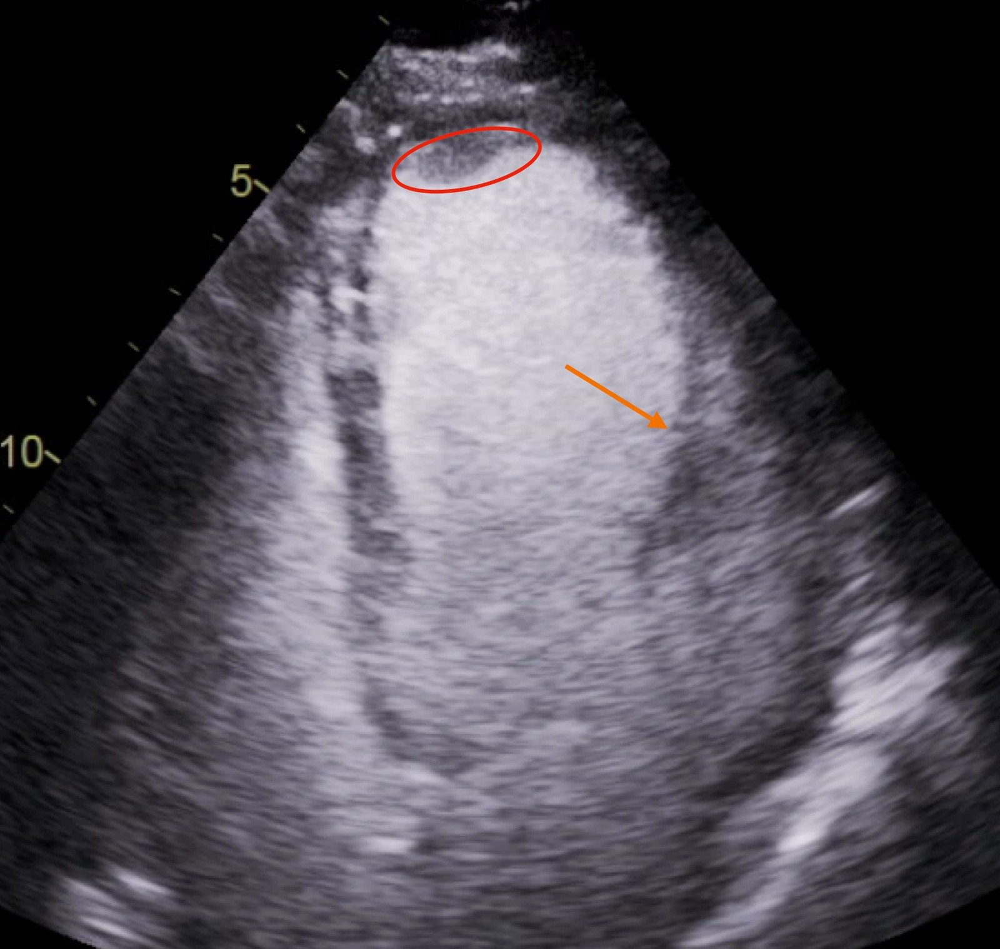
Bên dưới là góc chụp RAO (chếch trước phải) chếch chân (“RAO caudal”). Góc chụp này thường tốt nhất cho động mạch mũ trái và các nhánh của nó.
Chúng ta thấy LCx cho ra vài nhánh rất nhỏ và sau đó là một nhánh OM lớn hơn. Nếu nhìn kỹ mũi tên đỏ ở phía trên, bạn có thể thấy nó chỉ vào một đoạn có một chỗ khuyết thuốc nhỏ. Điều này gợi ý huyết khối (vì thuốc cản quang không thấm tốt vào huyết khối đã hình thành). Ngoài ra, mũi tên xanh ở phía trên bên trái chỉ một đoạn của LAD có hẹp nặng, nhiều khả năng là thủ phạm của lần tắc LAD trước đó, mà sau đó đã tái thông. Cũng có các nhánh chéo không được hiển thị rõ.

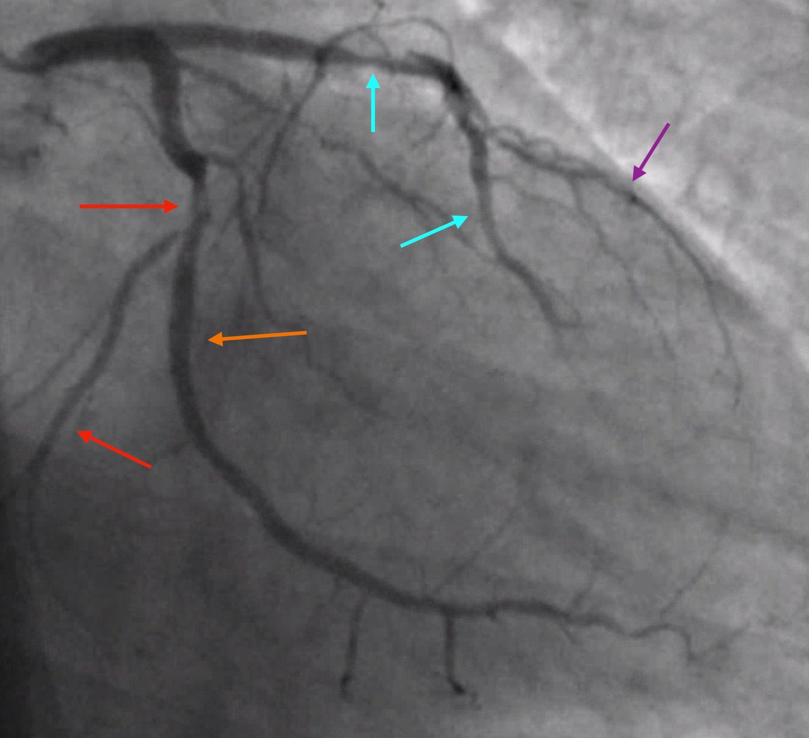
Bên dưới là góc chụp LAO (chếch trước trái) chếch chân (“LAO caudal”, hay “góc chụp hình nhện” – spider shot). Góc chụp này thường tốt nhất cho đoạn xa thân chung động mạch vành trái, LAD đoạn gần và các nhánh chéo, cũng như LCx đoạn gần và các nhánh.
Chúng ta thấy LAD chạy ra phía trước và cho ra các nhánh chéo. Một lần nữa, mũi tên xanh ở phía trên chỉ vào vị trí nhiều khả năng đã bị tắc trước đó của LAD. Chúng ta lại nhận ra chỗ khuyết thuốc ở LCx tại đầu mũi tên đỏ phía trên. OM chạy xuống dưới và sang bên.

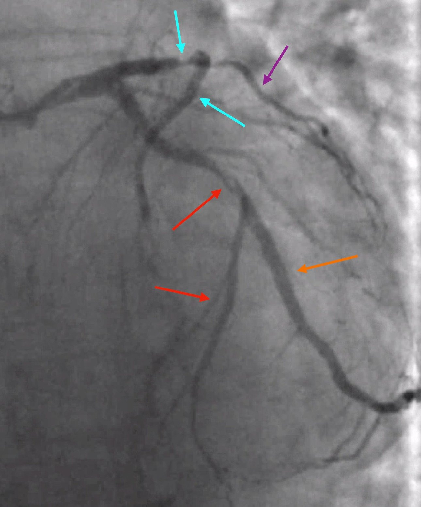
Bên dưới là góc chụp LAO chếch đầu (“LAO crani”). Góc chụp này thường tốt nhất để quan sát LAD đoạn giữa cùng với các chỗ chia đôi của nhánh chéo.
Chúng ta lại thấy LAD chạy ra phía trước. Các nhánh chéo chồng lên LCx và các nhánh OM nhỏ hơn. Huyết khối ở LCx tại mũi tên đỏ không được nhận ra rõ trên góc chụp này vì nó chồng lên LAD. Chúng ta cũng thấy nhánh OM lớn hơn trên góc chụp này. Đặc biệt, góc chụp này cho thấy rõ dòng chảy TIMI 2 rất chậm trong LAD. Điều này là do nhồi máu trước đó ở vùng này và rối loạn chức năng vi mạch.

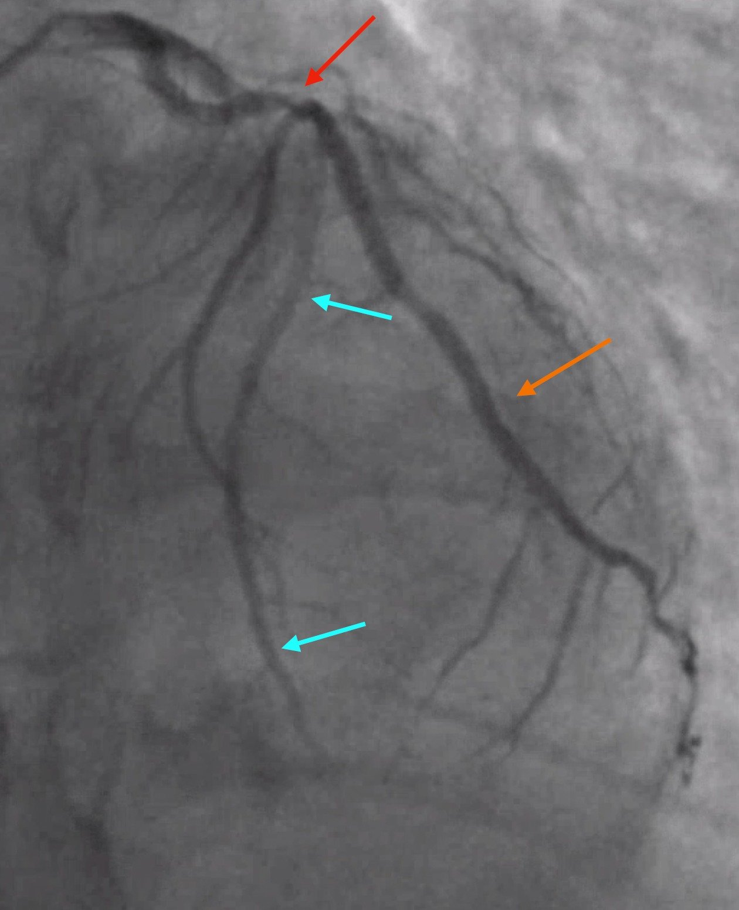
Tổng hợp tất cả dữ liệu, nhiều khả năng bệnh nhân đã bị một OMI thành trước trong vài ngày hoặc vài tuần trước khi nhập viện. Điều này dẫn đến nhồi máu thành trước/mỏm và hình thành huyết khối ở mỏm. Sau đó, một phần huyết khối bong ra gây thuyên tắc vào LCx, gây ra OMI thành dưới-sau-bên. (Nói thêm, OMI do LCx là một biến cố típ 2, vì nó là do mất cân bằng cung-cầu từ huyết khối, chứ không phải do nứt vỡ hay mòn mảng xơ vữa).
Những điểm cần học:
- Ghi lại điện tâm đồ khi nhiễu làm hạn chế việc đọc hoặc chẩn đoán chưa chắc chắn.
- Tăng độ khuếch đại trên điện tâm đồ nếu biên độ rất nhỏ.
- Dùng dải nhịp để giúp xác định các thành phần của một chuyển đạo nhiều nhiễu.
- Như đã bàn nhiều lần trước đây trên blog này, tính tương xứng (proportionality) là chìa khóa để chẩn đoán OMI bằng điện tâm đồ. Mong tìm thấy ST chênh lên 1 mm trên một điện tâm đồ có biên độ nhỏ xíu cũng giống như mong tìm thấy ngôi nhà của bạn trên quả địa cầu. Thang đo đã sai.

===================================
BÌNH LUẬN CỦA TÔI, bởi KEN GRAUER, MD (15/1/2024):
===================================
Tôi không được dạy về nhiễu ở trường y cũng như trong thời gian nội trú. Thay vào đó (tôi chắc rằng nhiều độc giả cũng từng trải qua điều này) — tôi học về nhiễu từ những ca mà tôi đã bỏ sót chẩn đoán. Tôi thường ở trong “nhóm đông người” — vì nhiều bác sĩ lâm sàng giàu kinh nghiệm hơn tôi rất nhiều vào thời điểm đó cũng không nhận ra được những dao động nào trên điện tâm đồ là “thật” và những dao động nào không phải.
Ca bệnh hôm nay của Drs. Colin Jenkins và Willy Frick là một minh họa tuyệt vời cho thấy dù có biến dạng do nhiễu nghiêm trọng — vẫn có thể nghi ngờ mạnh OMI cấp.
- Trong Hình 1, để củng cố các khái niệm MẤU CHỐT mà Drs. Jenkins và Frick đã đưa ra — tôi đưa thêm 3 ví dụ về biến dạng do nhiễu (trích từ ECG Blog của tôi) — đã dẫn đến chẩn đoán sai rối loạn nhịp.
THỬ THÁCH:
Trong mỗi ca — LÀM THẾ NÀO bạn có thể loại trừ ngay lập tức rối loạn nhịp đã được chẩn đoán?
- Nhịp A: Dải nhịp này được quan sát trên theo dõi từ xa (telemetry) — và được cho là cuồng nhĩ (AFlutter).
- Nhịp B: Bệnh nhân này được khám ở khoa cấp cứu — và được cho là đang cuồng nhĩ với dẫn truyền AV 4:1.
- Nhịp C: Dải nhịp theo dõi từ xa này của một người cao tuổi ban đầu được cho là cần khử rung.

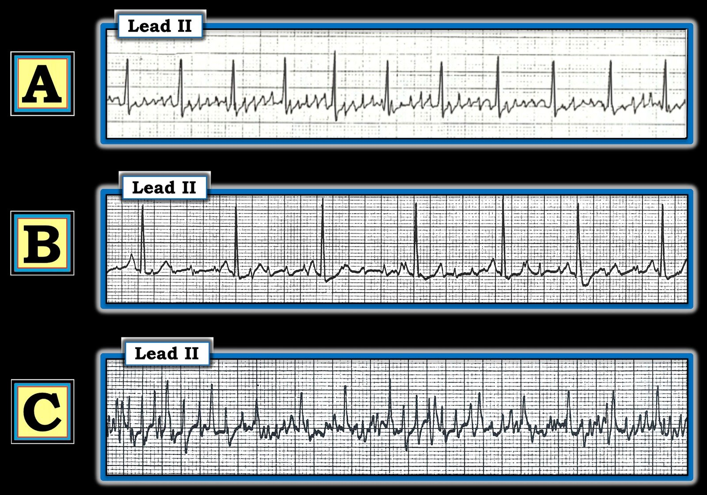
TRẢ LỜI:
Tôi đã đánh dấu trong Hình 2 — các đặc điểm MẤU CHỐT của từng dải nhịp trong 3 dải nhịp ở Hình 1, giúp nhận ra ngay lập tức chẩn đoán rối loạn nhịp:
- Nhịp A: Chúng ta có thể loại bỏ ngay khả năng cuồng nhĩ (AFlutter) vì: i) Nhịp này thiếu hình ảnh “răng cưa” nhất quán của cuồng nhĩ điển hình, vốn phải thấy ở các chuyển đạo dưới, trong đó mọi sóng cuồng nhĩ trông giống hệt nhau; và, ii) Các dao động trong Nhịp A trông có dạng hình học (tức là thẳng đứng) — chúng không đều — và xuất hiện với tần số nhanh hơn nhiều (tức là khoảng 400-500/phút) so với khoảng 250 đến 350/phút dự kiến đối với cuồng nhĩ chưa điều trị.
- Chỉ cần liếc nhanh bệnh nhân là xác nhận được rằng các dao động thẳng đứng biên độ nhỏ này trong Nhịp A là hậu quả của nhiễu do run.
- Nhịp B: Sau dẫn truyền AV 2:1 — dẫn truyền AV 4:1 là thường gặp trong cuồng nhĩ, và ban đầu Nhịp B đã được nghĩ là như vậy. Tuy nhiên, cũng như Nhịp A — chúng ta có thể loại bỏ ngay cuồng nhĩ là nguyên nhân của Nhịp B vì: i) Các dao động nhỏ hướng lên trên đường nền giữa các phức bộ QRS chắc chắn không đều (trong khi với cuồng nhĩ thì chúng phải đều); ii) Mối liên hệ giữa các dao động thẳng đứng nhỏ này (thấy dọc khắp đường nền trên dải nhịp này) với các phức bộ QRS kế cận thay đổi liên tục — trong khi với cuồng nhĩ thường có một khuôn mẫu lặp lại trong mối liên hệ giữa các dao động nhĩ và các phức bộ QRS kế cận; và, iii) Chúng ta có thể nhận ra nhịp nền (tức là các mũi tên ĐỎ đánh dấu các sóng P xoang dương!).
- Một lần nữa, chỉ cần liếc nhanh bệnh nhân là thấy một cơn run kiểu Parkinson. Tần số của cơn run khi nghỉ đặc trưng của bệnh Parkinson thường xấp xỉ tần số của cuồng nhĩ.
- Nhịp C: Ngay khi Nhịp C xuất hiện trên màn hình theo dõi từ xa (telemetry) — nhân viên y tế đã lao vào phòng bệnh nhân. Như bạn có thể đã đoán — bệnh nhân này vẫn ổn. Các đặc điểm điện tâm đồ trong Nhịp C cho phép chúng ta loại bỏ ngay rung thất (VFib) gồm: i) Dạng hình học của các dao động thẳng đứng không mang tính sinh lý này, vốn không đều một cách khó đoán, và cực kỳ nhanh (vượt xa 300/phút); và, ii) Chúng ta có thể nhận ra nhịp nền (Lùi ra xa khỏi bản ghi gợi ý có vài dao động được đánh dấu “X” trông như có thể là các phức bộ QRS của nhịp nền. Đặt compa đo theo khoảng cách giữa các phức bộ này cho phép chúng ta “dò bước” ra các dao động xuất hiện đều đặn với tần số ~130/phút dọc khắp bản ghi = các mũi tên ĐỎ).
NHỮNG ĐIỂM CẦN HỌC:
Nhiễu (artifact) trong thực hành lâm sàng phổ biến hơn nhiều so với những gì nhiều người hành nghề nhận ra. Đôi khi, có thể cực kỳ khó phân biệt nhiễu với một bản ghi thật. Hậu quả của việc bỏ sót nhiễu là đáng kể (tức là Một OMI cấp có thể bị bỏ sót, như suýt xảy ra trong ca bệnh mà BS. Jenkins và Frick trình bày ở trên — hoặc có thể chỉ định thêm các thủ thuật và/hoặc sốc điện bệnh nhân vì nhiễu giả VT/VFib). Hãy ghi nhớ những điều sau:
- Kiểm tra bệnh nhân trước tiên. Các nguyên nhân gây nhiễu thường gặp nhất gồm tiếp xúc da–điện cực không ổn định và cử động cơ thể (gãi, run, run rẩy vì lạnh, ho, nấc cụt, đánh răng, quằn quại trên giường, hoạt động co giật, nhiễu từ một thiết bị cơ học, v.v.).
- Các đặc điểm điện tâm đồ gợi ý nguyên nhân là nhiễu gồm dạng hình học (các dao động thẳng đứng không mang tính sinh lý) không đều một cách khó đoán, thường với tần số cực kỳ nhanh. Trên bản ghi 12 chuyển đạo, người ta thường thấy những dao động rất bất thường ở một số chuyển đạo mà không giải thích được, nhưng không thấy ở các chuyển đạo khác.
- Việc nhận ra được một nhịp đều nền không bị xáo trộn bởi các dao động nhiễu là bằng chứng cho thấy hiện tượng đó không có thật (như minh họa ở Nhịp B và C trong Hình 2).

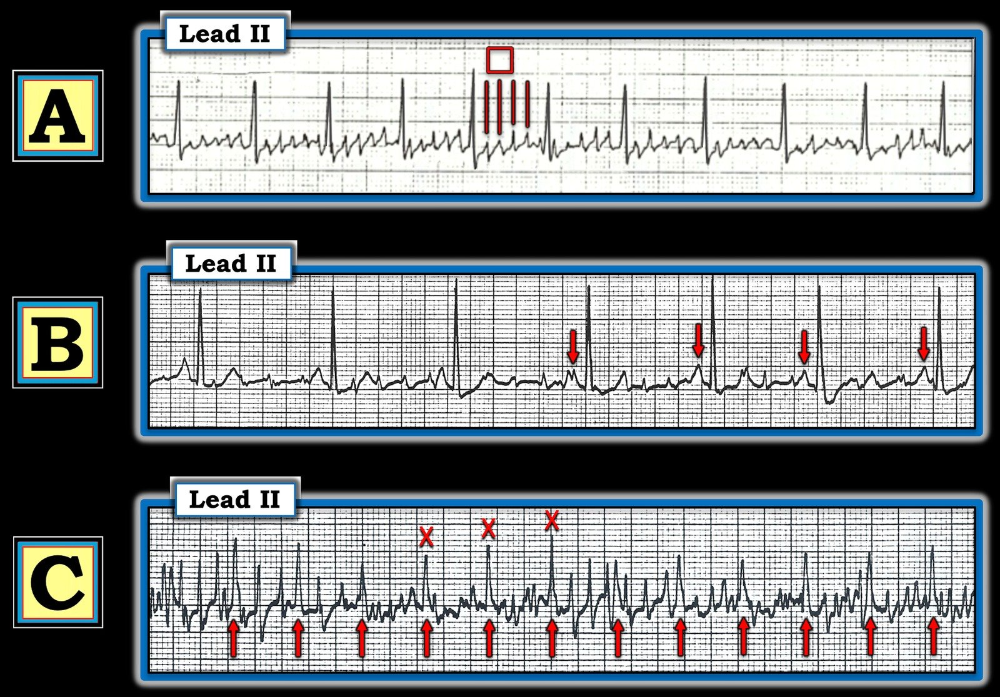
================================
Các link tới những Ví dụ về NHIỄU:
Dưới đây là một danh sách đang được bổ sung dần về các “sự cố” kỹ thuật (technical misadventure) — phần lớn từ Dr. Smith’s ECG Blog — một số từ các nguồn khác (LƯU Ý: Vì trước đây tôi không lưu lại các trường hợp này — còn có thêm những ví dụ về nhiễu rải rác trong Dr. Smith’s ECG Blog mà tôi chưa đưa vào đây … ).
- Bài ngày 15 tháng Chín năm 2023 — về PTA (nhiễu do mạch đập).
- Bài ngày 6 tháng Tư năm 2023 — nhiễu đường nền quá mức bị chẩn đoán nhầm là AFib (thay vì nhịp xoang kèm Wenckebach AV — như trong Hình 4 của bài này).
- Bài ngày 17 tháng Ba năm 2023 — về PTA.
- Bài ngày 17 tháng Một năm 2023 — về PTA.
- Bài ngày 21 tháng Mười năm 2022 — về “VT do nhiễu”.
- Bài ngày 10 tháng Mười Một năm 2020 — về PTA.
- Bài ngày 17 tháng Mười năm 2020 — về một phụ nữ 70 tuổi với “VT do nhiễu“.
- Bài ngày 27 tháng Chín năm 2019 — về bài báo của Rowlands & Moore với các công thức đã nêu ở trên để nhận ra chi “thủ phạm”.
- Bài ngày 22 tháng Chín năm 2019 — nhiễu sóng ST-T từng lúc.
- Bài ngày 26 tháng Tám năm 2019 — nhiễu đường nền.
- Bài ngày 30 tháng Một năm 2018 — về PTA.
- Bài tổng quan ngắn của Tom Bouthillet về một số nguyên nhân gây nhiễu thường gặp.
- Tổng quan bổ sung về nhiễu điện tâm đồ của Pérez-Riera và cs. (Ann Noninvasic Electrocardiol 23:e12494, 2018)
- Nhiễu giả VT — của Knight và cs.: NEJM 341:1270-1274, 1999.
- Nhiễu giả VFib — BẤM VÀO ĐÂY.
- Thêm nhiễu giả VT-VFib — BẤM VÀO ĐÂY.
- Nhiễu giả cuồng nhĩ — BẤM VÀO ĐÂY.
- Run kiểu Parkinson so với cuồng nhĩ — BẤM VÀO ĐÂY.
- Nhiễu do điện cực chân trái — BẤM VÀO ĐÂY.
- Có nên kích hoạt phòng thông tim? — BẤM VÀO ĐÂY.